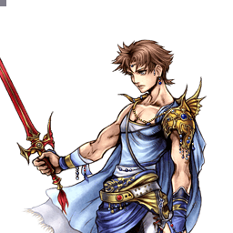

Final Fantasy V
Bartz Klauser
Mime au sol solide, trahi par un jeu aérien lent et un zoning fragile
Position dans la méta
Tier D 30ᵉ sur 30 — tier list tournoi 2017 de dissidia.wiki (moitié valeurs de matchups, moitié avis de joueurs experts).
Bartz ferme la marche de la tier list 2017 : tier D, 30e sur 30. L'overview ne commente pas ce classement, mais les faiblesses documentées (air game surclassé, pokes aériens lents, zoning et EX Force faibles) vont dans le même sens.
Vue d'ensemble
Bartz Klauser est le protagoniste insouciant de Final Fantasy V. Dans Dissidia 012, il incarne la classe Mime de son jeu d'origine : son moveset est entièrement emprunté aux autres Guerriers de Cosmos.
Le tableau de forces et faiblesses du wiki dresse un portrait contrasté : un jeu au sol solide, avec des pokes rapides et des HP attacks qui couvrent bien l'espace au-dessus de lui, et des builds créatifs grâce aux boosts passifs de ses coups copiés. En face, un jeu aérien qui, bien que correct en soi, est souvent surclassé par de nombreux personnages : ses pokes aériens lents et punissables compliquent la génération de jauge d'assist en sécurité, son zoning est faible — Holy inflige de lourds dégâts et offre un excellent Link BRV vers HP, mais sa priorité Ranged Low se retourne facilement contre lui — et sa génération d'EX Force est médiocre.
Forces
- Jeu au sol solide : pokes rapides et HP attacks couvrant bien l'espace au-dessus de lui.
- Solid Ascension : startup de 13F, meilleurs dégâts au sol (50 de base), près d'un dixième de jauge EX par touche et construction d'assist fiable.
- Boosts passifs des coups copiés (Speed Boost, EX Intake, Physical Shield…) exploitables pour des builds créatifs.
- Holy peut link dans Flare pour des dégâts importants, et le Link Glitch facilite grandement les confirms.
- Reel Impulse : plus longue portée de ses coups au sol, priorité haute imblocable en garde normale, et +1m d'EX Intake cumulable.
- Goblin Punch en EX Mode : startup de 15F, Unblockable, dégâts massifs à niveau égal.
Faiblesses
- Jeu aérien moyen en soi et souvent surclassé par le reste du cast.
- Pokes aériens lents et punissables : générer de la jauge d'assist en sécurité est difficile — Rush Impact (19F) est pourtant son coup aérien le plus rapide.
- Zoning faible : Holy (Ranged Low) est déviée par un simple Free Air Dash, ses orbes persistantes peuvent revenir frapper Bartz et le coup est assist-punissable.
- Faible génération d'EX Force globale.
- Reel Impulse a une recovery extrêmement longue, punissable de multiples façons.
- Solid Ascension a une portée horizontale et verticale très courte : il faut être collé à l'adversaire.
Stats & vitesses
| Nom | Bartz Klauser (バッツ・クラウザー) |
|---|---|
| Jeu d'origine | Final Fantasy V |
| ATK de base (LV100) | 110 (Average) |
| DEF de base (LV100) | 111 (Average) |
| Vitesse de course | 6 (Average / Good) |
| Vitesse de dash | 77F (Average / Good) |
| Vitesse de chute | 89F (Below Average) |
| Chute après esquive | 39F (Average) |
| BRV la plus rapide | 13F (Solid Ascension) |
| HP la plus rapide | 15F (Goblin Punch, EX)39F (Hellfire) |
| HP en 1 coup | Yes (Multiple) |
| HP links | Yes |
| Command block | No |
| Armes | All |
| Armures | All |
| Armes exclusives | Chocoblade, Dayspring, Dorgann's Blade |
| Camp | Cosmos |
| Doubleur (JP) | Sōichirō Hoshi |
| Doubleur (ENG) | Jason Spisak |
Point or : ce personnage · petits points : le reste du cast · trait violet : moyenne. Valeurs du wiki, plus bas = plus rapide ; le rang à droite se lit directement (1ᵉʳ = le plus rapide).
Coups
Braveries
Au sol
Blade Crash Melee Low
Copié de Lightning et Vaan : deux coups de Blazefire Saber puis une traversée au katana. Coup lent (23F) mais qui avance légèrement, bon pour attraper un whiff à portée ; facilement blocable et punissable si lancé sans réfléchir. Bonne génération d'EX Force (90) — à arbitrer avec Hazard Raid. Chaque Blade Crash équipé ajoute 8 % de vitesse de course (Speed Boost).
| Dégâts de base | 8, 7, 6, 1 x 4, 15 (40) |
|---|---|
| Startup | 23 |
| Type | Physical |
| Priorité | Melee Low |
| EX Force | 90 |
| Effets | Chase, Minor Speed Boost |
| CP (maîtrisé) | 30 (15) |
Reel Impulse Ranged High (Axe), Melee Low (Dagger)
Copié de Firion et Zidane : jet de hache qui ramène l'adversaire puis taillades. La hache offre la plus longue portée de ses coups au sol et sa priorité haute (Ranged High) ne se bloque pas en garde normale, ouvrant des assist punishes sur dodge raté. L'effet EX Intake +1m se cumule (deux Reel Impulse = +2m, presque une Heaven's Cloud). Revers majeur : recovery extrêmement longue et vulnérabilité aux assist punishes — ne le lancez qu'avec au moins une barre d'assist. À bout portant, le landing lag permet un dodge cancel vers Blade Crash pour un combo solo.
| Dégâts de base | 7, 7, 3 x 3, 4, 16 (43) |
|---|---|
| Startup | 47 |
| Type | Physical |
| Priorité | Ranged High (Axe), Melee Low (Dagger) |
| EX Force | 27 |
| Effets | Wall Rush, EX Intake Range +1m |
| CP (maîtrisé) | 35 (15) |
Hazard Raid Melee low
Copié de Cloud et Tifa : la charge du Climhazzard suivie du Beat Rush. Bon distance closer, mais il hérite des défauts du Climhazzard et troque son Wall Rush contre un Chase. Peu d'intérêt en build Side by Side face à Reel Impulse ; en build EX, sa génération d'EX Force (90) est le principal argument, mais le coup reste lent et rarement utilisé.
| Dégâts de base | 3 x 4, 5, 8, 10 (35) |
|---|---|
| Startup | 27 |
| Type | Physical |
| Priorité | Melee low |
| EX Force | 90 |
| Effets | Chase, Chase bravery damage +10 % |
| CP (maîtrisé) | 30 (15) |
Solid Ascension Melee Low
Copié de Squall et du Warrior of Light : sa meilleure bravery au sol. Startup extrêmement rapide (13F), meilleurs dégâts au sol, quasi un dixième de jauge EX par touche et construction d'assist fiable qui le protège des assist punishes. Contrepartie : portée horizontale et verticale très faible, il faut être collé à l'adversaire et le coup punit mal les approches aériennes — ses HP anti-air compensent.
| Dégâts de base | 4, 5, 6, 7, 5, 7, 16 (50) |
|---|---|
| Startup | 13 |
| Type | Physical |
| Priorité | Melee Low |
| EX Force | 96 |
| Effets | Chase, Wall Rush, Minor Physical Shield |
| CP (maîtrisé) | 30 (15) |
En l’air
Holy Ranged Low
Copié de Terra : son outil de zoning de fait, cinq orbes homing à bons dégâts unitaires qui punissent à longue distance, sanctionnent les dodges excessifs et forcent à bloquer chaque orbe — un misblock peut coûter très cher, d'autant que Holy link dans Flare. Le Link Glitch (relancer Holy avant l'impact de la première salve) rend les confirms bien plus faciles et gonfle les dégâts au-delà de la normale. Mais le coup est très lent au startup (37F), déviée par un Free Air Dash, assist-punissable, et les orbes persistantes peuvent revenir frapper Bartz après sa propre touche : quand ça marche c'est excellent, sinon c'est son pire choix.
| Dégâts de base | each (8) |
|---|---|
| Startup | 37 |
| Type | Magical |
| Priorité | Ranged Low |
| EX Force | 0 |
| Effets | Chase, Minor Jump Boost |
| CP (maîtrisé) | 30 (15) |
Rush Impact Melee Low
Copié de Kain et Lightning : son coup aérien le plus rapide, et pourtant lent pour un poke (19F, comparable au Slashing Blow de Cloud). Un peu de portée et un combo assist facile, mais prévisible, médiocre en approche comme sur whiff, avec une fenêtre de dodge cancel tardive : c'est le symbole de son air game laborieux.
| Dégâts de base | 6, 8, 16 (30) |
|---|---|
| Startup | 19 |
| Type | Physical |
| Priorité | Melee Low |
| EX Force | 30 |
| Effets | Wall Rush, Jump Times Boost |
| CP (maîtrisé) | 30 (15) |
Slide Shooter Melee Low
Copié de Tidus et Kain : gap closer et outil d'appoint pour générer de l'assist. Fenêtres d'input généreuses et bon hit stun rendent la confirmation d'un combo assist facile, même sans Wall Rush au plafond. Sur un input neutre + Cercle, le Lock Off permet de générer de l'assist en sécurité un peu plus longtemps. Comme le Full Slide de Tidus, le ralenti d'un appel d'assist augmente fortement son tracking vertical — stratégie à réserver aux punishs et aux approches sûres, et qui repose sur l'assist Aerith, avec les sacrifices que cela implique.
| Dégâts de base | 1 x 6, 5, 6, 3, 3, 5, 12 (40) |
|---|---|
| Startup | 25 |
| Type | Physical |
| Priorité | Melee Low |
| EX Force | 30 |
| Effets | Wall Rush, Wall Rush Bravery damage +30 % |
| CP (maîtrisé) | 30 (15) |
Attaques HP
Au sol
Hellfire Melee (Claw) / Ranged High (Pillars)
Invoque Ifrit et ses piliers de feu (39F au sol) ; la génération d'EX augmente avec le nombre de piliers qui touchent.
| Dégâts de base | 10 (10) |
|---|---|
| Startup | 39 |
| Type | Physical |
| Priorité | Melee (Claw) / Ranged High (Pillars) |
| EX Force | 60~150 |
| Effets | Wall |
| CP (maîtrisé) | 30 (15) |
Dark Flame Ranged High
Plante l'épée au sol pour des gerbes de feu noir (53F, Ranged High) qui traquent l'adversaire jusque dans les airs et à travers les murs.
| Startup | 53 |
|---|---|
| Priorité | Ranged High |
| EX Force | 0 |
| Effets | Wall Rush, Minor Ground Evasion Boost |
| CP (maîtrisé) | 30 (15) |
En l’air
Ragnarok Blade Melee High
Longue lame d'énergie tranchée comme une épée (45F, Melee High, Wall Rush), avec +5 % de dégâts HP sur Wall Rush.
| Startup | 45 |
|---|---|
| Priorité | Melee High |
| EX Force | 0 |
| Effets | Wall Rush, Wall Rush HP damage +5% |
| CP (maîtrisé) | 30 (15) |
Luminous Shard Ranged High
Lame de lumière projetée à longue portée (61F, Ranged High), assortie d'un Minor Midair Evasion Boost.
| Startup | 61 |
|---|---|
| Priorité | Ranged High |
| EX Force | 60 |
| Effets | Minor Midair Evasion Boost |
| CP (maîtrisé) | 30 (15) |
HP links (Bravery → HP)
Attaques HP qui se déclenchent en prolongement d'une bravery précise — le « HP link ». Elles s'équipent comme les autres attaques HP.
Flare Unblockable (?)
HP Link accessible depuis Holy : trois rayons convergent pour piéger l'adversaire puis exploser. C'est la récompense qui rend Holy si dangereuse quand elle touche.
| Dégâts de base | 1 x 12 (12) |
|---|---|
| Startup | ? |
| Type | Magical |
| Priorité | Unblockable (?) |
| EX Force | 96 |
| Effets | Minor Magic Shield |
| CP (maîtrisé) | 30 (15) |
EX Mode: Job Mastered! & EX Burst
EX Mode « Job Mastered! » : Regen, Critical Boost et l'ajout du HP Goblin Punch. Les sources le qualifient d'EX Mode générique, dont l'intérêt principal est justement Goblin Punch.
Goblin Punch (R + Carré, 15F, Magical, Unblockable, Wall Rush) : un excellent coup de mêlée au startup très rapide, qui inflige de solides dégâts si la cible est du même niveau que Bartz (8 x 5). Sa portée est faible : à ne pas lancer à la légère sous peine de punish.
EX Burst : « Master Mime » : Bartz ajoute la force de ses alliés à ses propres talents pour une série de coups magistraux — chaque direction (haut, bas, gauche, droite) correspond à un hit.
Coups spéciaux
Commandes particulières absentes des listes d'équipement : elles ne coûtent aucun CP et s'activent par une commande dédiée.
Goblin Punch Coup spécial
Attaque HP spéciale absente des listes d'équipement, disponible uniquement en EX Mode : rapide, à courte portée et imblocable, avec Wall Rush. Elle inflige des dégâts bravery avant d'éjecter l'adversaire et — tradition du sort oblige — huit fois plus de dégâts bravery si Bartz et son adversaire sont au même niveau. Son exécution rapide et ses bons dégâts au niveau 100 compensent la lenteur des attaques HP normales de Bartz.
Sources : finalfantasy.fandom.com/wiki/Bartz_Klauser_(Dissidia_PSP)
Plan de jeu & techniques avancées
Bartz joue au sol. Solid Ascension est le pivot : assez rapide (13F) pour punir les coups lents à portée, il inflige les meilleurs dégâts au sol, génère beaucoup d'EX Force et construit la jauge d'assist de façon fiable — de quoi garder au moins une barre pour se protéger des assist punishes ou convertir soi-même. Sa portée minuscule impose d'être collé à l'adversaire ; les approches aériennes se gèrent plutôt avec ses HP attacks qui couvrent bien l'espace au-dessus de lui (Hellfire, Dark Flame).
À distance, tout passe par Holy : punishs longue portée, sanction des dodges, pression sur le block orbe par orbe, et surtout le link vers Flare — facilité par le Link Glitch — qui apporte dégâts et touches HP. Mais la moindre approche en Free Air Dash dévie les orbes et les retourne contre lui : ne spammez pas Holy quand l'adversaire a une barre d'assist ou l'espace pour dasher.
Reel Impulse complète le kit au sol : plus longue portée, priorité haute qui force le dodge (et ouvre l'assist punish sur dodge raté), et EX Intake +1m cumulable pour les builds EX. Sa recovery interminable en fait toutefois un coup à ne lancer qu'avec une barre d'assist en réserve. En l'air, contentez-vous du minimum : Rush Impact pour les confirms d'assist, Slide Shooter comme gap closer et générateur d'assist, en exploitant ses fenêtres d'input généreuses.
Côté ressources, les sources orientent vers Kuja et Jecht comme assists (startup rapide des follow-ups, potentiel de dégâts sur les setups Holy -> Flare), l'assist Aerith n'étant justifiée que pour la stratégie de tracking renforcé de Slide Shooter. En EX Mode, Goblin Punch (15F, Unblockable) devient une menace de punish majeure à courte portée.
Techniques spécifiques
Link Glitch (Holy)
Lancez Holy à distance, puis relancez un second Holy avant que la première salve ne touche : la première ne disparaît pas et, si elle touche, elle compte comme la seconde — ce qui autorise le link dans Flare. Confirms beaucoup plus faciles et dégâts supérieurs à ce que Bartz est censé obtenir.
Slide Shooter assist-call tracking
Comme le Full Slide de Tidus, le ralenti provoqué par un appel d'assist augmente fortement le tracking vertical de Slide Shooter. À utiliser en punish ou sur une approche dont vous êtes sûr ; la stratégie repose sur l'assist Aerith, ce qui coûte les conversions précoces de ses autres coups aériens.
Lock Off (Slide Shooter)
Avec Slide Shooter réglé sur neutre + Cercle, le Lock Off permet de générer de la jauge d'assist en sécurité un peu plus longtemps.
Reel Impulse dodge cancel
En connectant Reel Impulse à bout portant, le landing lag autorise un dodge cancel vers Blade Crash pour un combo solo.
Reset loop Holy -> Flare (Side by Side)
Documenté par Djungelkorv sur dissidiaforums (2011) : combo d'assist dans Holy, second Holy immédiat (Link Glitch), puis activer Flare le plus tard possible — l'adversaire doit faire son aerial recovery entre Holy et Flare. La jauge d'assist redevient alors active, Side by Side + EXP to Assist la remplissent, et le tracking de Flare garantit la touche HP (testé : impossible d'y échapper même sans recovery, hors double dodge ou Precision Dodge) — on rappelle l'assist sur Flare et on boucle. Kuja permet la longue portée via le chase et se contente d'une seule vague de Holy ; Jecht inflige le plus de dégâts mais exige un timing et une distance plus stricts ; Aerith facilite le réglage de distance mais n'ajoute aucun dégât.
Sources : web.archive.org/web/20131020093302/http://dissidiaforums.com
Routes de combo solo recensées
Peu nombreux mais excellents, surtout en dégâts bravery : Reel Impulse à bout portant (sans follow-up) > dodge cancel > landing lag > Blade Crash ; Holy > DC > Slide Shooter ou Ragnarok Blade (« Rag Blade » dans le relevé) ; Holy > hit glitch Holy > Flare ou setup de Chase HP.
Sources : pastebin.com/8FWDXjvJ
Empty chase vers reset de jauge d'assist
Holy à bout portant offre l'empty chase vers reset de la jauge d'assist.
Sources : pastebin.com/dKSWgUQ6
Techniques universelles (blodge, dash feint, lock off, dodge punishment) : voir la page Techniques & glitches.
Matchups
Le tableau d'ensemble vient de la scène d'époque : à la sortie de la tier list communautaire 2012, les joueurs de dissidiaforums (thread « Bartz Klauser, the second worst character in the game », août 2012) actaient que Bartz n'était 2e pire du jeu que grâce à « son léger avantage sur Laguna » — le seul matchup favorable documenté. Le diagnostic de Starwave résume la logique des matchups : « dans n'importe quel matchup, l'adversaire a typiquement un coup qui fait mieux ce que Bartz voudrait faire » — jack of all trades, master of nothing. kewldude475 en tire les cas concrets : contre Firion il faut « devenir créatif avec les assists », et contre Sephiroth ou Ultimecia « c'est un combat en montée, tout simplement ». Les stages exigus, qui valorisent son jeu au sol et rapprochent les plafonds, sont cités comme son meilleur terrain.
Le matchup le mieux documenté est Golbez, vu du côté adverse (guide de tehdr4g0n, GameFAQs, 2012) : au sol, Bartz perd l'échange de zoning — son seul outil qui traverse Glare Hand et Attack System est Hazard Raid, que Golbez punit d'un jump suivi d'un Gravity System dans le dos (avec Sneak Attack et Counterattack à la clé) ; Holy se gère en airdash, qui renvoie les orbes, et le block est jugé peu fiable parce que les cinq orbes voyagent à des vitesses différentes. En l'air en revanche, tehdr4g0n concède à Bartz « un léger avantage » : Slide Shooter bat toutes les options aériennes de Golbez, inflige un gros morceau de bravery et débouche sur un chase. La leçon côté Bartz : contre les zoners au sol de ce profil, c'est l'air qu'il faut imposer, pas le duel de projectiles.
Deux avertissements transverses ressortent des guides adverses : b0untyhunter270 (guide Firion, 2012) juge Bartz « très facile à battre » hors EX Mode mais consacre son entrée à Goblin Punch, décrit — avec l'exagération d'époque — comme démarrant quasi instantanément : même les adversaires qui dominent le matchup respectent la menace de punish en EX Mode. À l'inverse, le guide Bartz de Balguna (dissidiaforums, 2011) rappelle que les fast fallers comme Kain ou Gilgamesh plongent sous Luminous Shard et dashent sur Bartz pour l'éviter complètement : ses HP lents à longue portée se désamorcent d'autant plus vite que l'adversaire tombe vite.
Sources : web.archive.org/web/20131027082557/http://dissidiaforums.com · gamefaqs.gamespot.com/psp/605802-dissidia-012-duodecim-final · gamefaqs.gamespot.com/psp/605802-dissidia-012-duodecim-final · web.archive.org/web/20130815135120/http://dissidiaforums.com
Vidéos de matchs : Replay Theater — matchs de Bartz Klauser.
Builds
Un seul build est réellement documenté : un « Side by Side » avec l'assist Kuja (Lufenian Axe, Blurry Moon, set Lufenian, effet spécial Judgment of Lufenia, invocation Rubicante), 450 CP avec Equip Glitch, pour un booster maximal de x5.9.
Les notes de coups esquissent la philosophie générale : en Side by Side, l'effet EX Intake est inutile mais Reel Impulse reste préféré pour sa portée et sa priorité, et on arbitre entre Blade Crash et Hazard Raid ; en build EX, on peut équiper deux Reel Impulse (+2m d'EX Intake, presque l'équivalent d'une Heaven's Cloud) en renonçant à Blade Crash et Hazard Raid.
| Stats | |
|---|---|
| HP | 10299 |
| CP | 450 |
| BRV | 916 |
| ATK | 180 |
| DEF | 184 |
| LUK | 60 |
| Max Booster | x5.9 |
| Equipment | |
|---|---|
| Assist | Kuja |
| Weapon | Lufenian Axe |
| Hand | Blurry Moon |
| Head | Lufenian Helm |
| Body | Lufenian Armor |
| Accessory 1 | Hyper Ring |
| Accessory 2 | Earring |
| Accessory 3 | Dismay Shock |
| Accessory 4 | BRV > Base Value |
| Accessory 5 | Empty EX Gauge |
| Accessory 6 | Summon Unused |
| Accessory 7 | Pre-EX Mode |
| Accessory 8 | Pre-EX Revenge |
| Accessory 9 | Opponent Summon Unused |
| Accessory 10 | Side by Side |
| Summon | Rubicante |
| Coup | Type | Où l’équiper | CP |
|---|---|---|---|
| Reel Impulse | Bravery | Au sol | 35 |
| Blade Crash | Bravery | Au sol | 30 |
| Dark Flame | HP | Au sol | 30 |
| Flare | HP | En l’air | 30 |
| Hazard Raid | Bravery | Au sol | 30 |
| Hellfire | HP | Au sol | 30 |
| Holy | Bravery | En l’air | 30 |
| Luminous Shard | HP | En l’air | 30 |
| Ragnarok Blade | HP | En l’air | 30 |
| Rush Impact | Bravery | En l’air | 30 |
| Slide Shooter | Bravery | En l’air | 30 |
| Solid Ascension | Bravery | Au sol | 30 |
Le wiki laisse vide le tableau des coups équipés de ce ou ces builds : ce moveset n'est pas documenté. À défaut, voici le coût en CP de chaque coup, à mettre en regard du total du build. Les coups les plus chers sont en haut.
Le second emplacement (« Build #2 ») est vide dans les sources : aucune donnée. Pour le reset loop Holy -> Flare, Djungelkorv (dissidiaforums, 2011) documente un équipement dédié : Excalibur II, l'accessoire Side by Side et EXP to Assist — les deux derniers étant indispensables à la boucle — complétés de Growth Egg(s), Bravery Orb et Earrings.
Sources : web.archive.org/web/20131020093302/http://dissidiaforums.com
Synergies d'assist
Bartz Klauser en tant qu'assist
Bartz est classé Low dans la tier list assist de Muggshotter. Ses coups d'assist : Blade Crash en BRV au sol (23F, Chase), Slide Shooter en BRV aérien (25F, Wall Rush), Dark Flame en HP au sol (53F, apparaît sur le joueur, Wall Rush) et Ragnarok Blade en HP aérien (45F, Wall Rush). Le wiki ne fournit pas d'évaluation rédigée de son rôle d'assist.
Assists recommandées
- Kuja — Cité dans les synergies du wiki et retenu dans le build documenté ; les notes de Slide Shooter le recommandent pour le startup rapide de ses follow-ups et le potentiel de dégâts des setups Holy -> Flare.
- Jecht — Cité dans les synergies du wiki, pour les mêmes raisons que Kuja (follow-ups rapides, setups Holy -> Flare).
- Aerith — Uniquement pour la stratégie de tracking renforcé de Slide Shooter pendant l'appel d'assist ; les notes avertissent que ce choix sacrifie les conversions précoces des autres coups aériens.
Tech communautaire
Bartz INFINITE COMBO - Dissidia 012: Duodecim — Frutte 2012
Vidéo d'époque montrant une variante du reset combo Holy -> Flare de Bartz ; l'assist Kuja étend la portée du setup grâce au chase.
Liste de combos solo de tout le cast (Eddiegames) 2022
Relevé communautaire des routes de combo solo des 31 personnages, rédigé par Eddiegames sur le Discord DISSIDIA et publié en pastebin (dernière mise à jour décembre 2022). Bartz y est crédité de combos peu nombreux mais excellents, appuyés sur Holy et Reel Impulse.
Liste des empty chases menant à un reset de jauge d'assist (Eddiegames)
Relevé personnage par personnage des coups dont le hit stun permet un empty chase (un chase initié sans rien y exécuter) suivi d'un reset de la jauge d'assist adverse. Le détail pour ce personnage est repris dans les techniques spécifiques.
Sources
- https://dissidia.wiki/Bartz_Klauser_(Dissidia_012)
- https://www.youtube.com/watch?v=5EO5BX_DD8g
- https://pastebin.com/8FWDXjvJ
- https://pastebin.com/dKSWgUQ6
- https://web.archive.org/web/20131027082557/http://dissidiaforums.com/showthread.php?13515-Bartz-Klauser-the-second-worst-character-in-the-game
- https://gamefaqs.gamespot.com/psp/605802-dissidia-012-duodecim-final-fantasy/faqs/63562
- https://gamefaqs.gamespot.com/psp/605802-dissidia-012-duodecim-final-fantasy/faqs/65018
- https://web.archive.org/web/20130815135120/http://dissidiaforums.com/showthread.php?10240-It-s-time-to-return-the-wind-to-the-world!-A-Bartz-Klauser-Guide
- https://web.archive.org/web/20131020093302/http://dissidiaforums.com/showthread.php?10794-Bartz-Reset-Combos
- https://dissidia.wiki/Tier_List_(Dissidia_012)
- https://dissidia.wiki/Tier_List_(Assist)
Limites connues
- Overview très courte (trois phrases descriptives) : la synthèse repose surtout sur le tableau forces/faiblesses et les notes de coups.
- La page matchups du wiki reste une ébauche (stub) : la section matchups est sourcée hors wiki (thread de tier list dissidiaforums 2012 et guides GameFAQs adverses) ; un seul matchup est analysé en profondeur (Golbez, du point de vue adverse).
- Section combos vide (sous-section « Solo » sans texte ni tableau).
- Aucune mécanique unique documentée (documented: false).
- Aucune référence communautaire dans les sources.
- Second build (« Build #2 ») entièrement vide.
- Données incomplètes : startup et priorité de Flare incertains (« ? »), notes minimales pour les HP attacks (Hellfire, Dark Flame, Ragnarok Blade, Luminous Shard), niveau de déblocage et AP de Goblin Punch non renseignés.
- Le relevé d'empty chases de la communauté n'est pas daté (le relevé de combos solo qui l'accompagne l'est de décembre 2022) : son état de fraîcheur ne peut pas être établi.